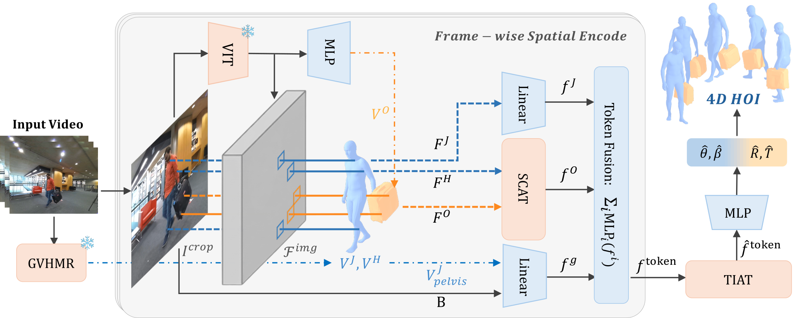
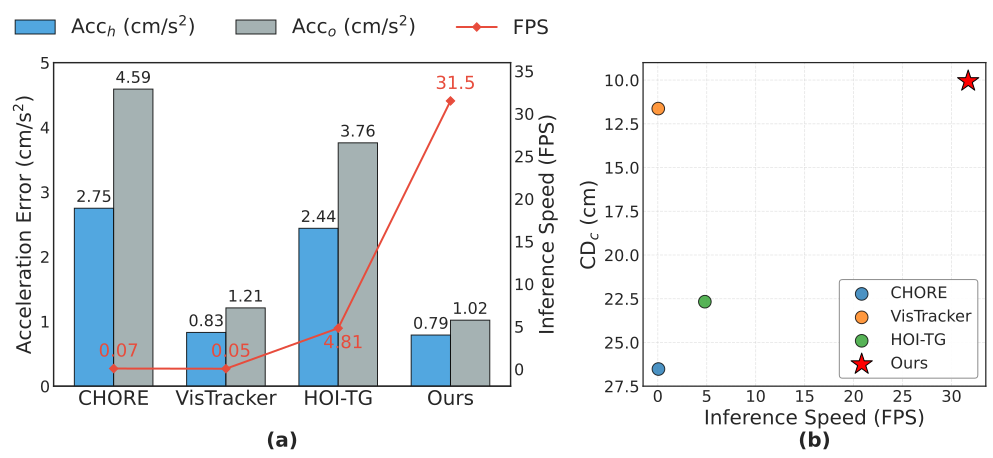
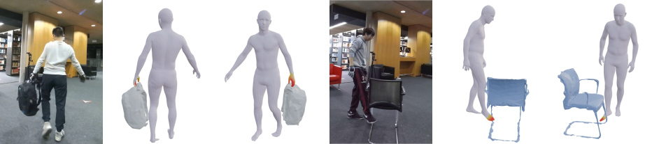

Real-time Monocular 4D HOI Reconstruction. Recovering temporally coherent 3D human and object motion from a single RGB video is notoriously difficult due to severe depth ambiguity and frequent mutual occlusions. We present THO, an end-to-end Spatial-Temporal Transformer that effectively overcomes these challenges by explicitly modeling human-object contact and continuous interaction dynamics. Our framework outputs physically plausible 4D reconstructions at an interactive speed of 31.5 FPS, bypassing computationally heavy test-time optimization while maintaining robust temporal coherence.
Monocular 4D human-object interaction (HOI) reconstruction—recovering a moving human and a manipulated object from a single RGB video—remains challenging due to depth ambiguity and frequent occlusions. Existing methods often rely on multi-stage pipelines or iterative optimization, leading to high inference latency, failing to meet real-time requirements, and susceptibility to error accumulation. To address these limitations, we propose THO, an end-to-end Spatial-Temporal Transformer that predicts human motion and coordinated object motion in a forward fashion from the given video and 3D template. THO achieves this by leveraging spatial-temporal HOI tuple priors. Spatial priors exploit contact-region proximity to infer occluded object features from human cues, while temporal priors capture cross-frame kinematic correlations to refine object representations and enforce physical coherence. Extensive experiments demonstrate that THO operates at an inference speed of 31.5 FPS on a single RTX 4090 GPU, achieving a >600x speedup over prior optimization-based methods while simultaneously improving reconstruction accuracy and temporal consistency.

Overview of THO. We resolve geometric ambiguities caused by frequent occlusions via two
modules:
• Spatial Contact-Aware Transformer (SCAT): Exploits physical contact as a strong
prior. It uses cross-attention to let occluded object regions "borrow" reliable geometric
features from the human based on spatial proximity.
• Temporal Interact-Aware Transformer (TIAT): Models cross-frame kinematic
correlations between human joints and the object. This captures continuous interaction
dynamics to enforce long-term physical coherence.
Together, they enable real-time feed-forward 4D HOI reconstruction without expensive test-time
optimization.

Efficiency vs. Performance on BEHAVE. THO operates at a real-time speed of 31.5 FPS, achieving a >600x speedup over optimization-based methods like VisTracker. Crucially, it outperforms all baselines by yielding the best temporal smoothness (Acch, Acco) as shown in (a), and the highest reconstruction accuracy (CDc) as shown in (b).

Effectiveness of Cross-Attention Maps. To verify that the network learns physically meaningful contact priors, we visualize the interaction heatmap derived by averaging the cross-attention weights assigned by the object queries to each human vertex. The visualization confirms that the attention mechanism successfully focuses on semantically corresponding and spatially proximal human parts (e.g., the interacting hand). It effectively suppresses regions that are either spatially close but semantically irrelevant, or semantically corresponding but distant. This validates that our module successfully captures the intended dual consistency of semantic and spatial proximity.